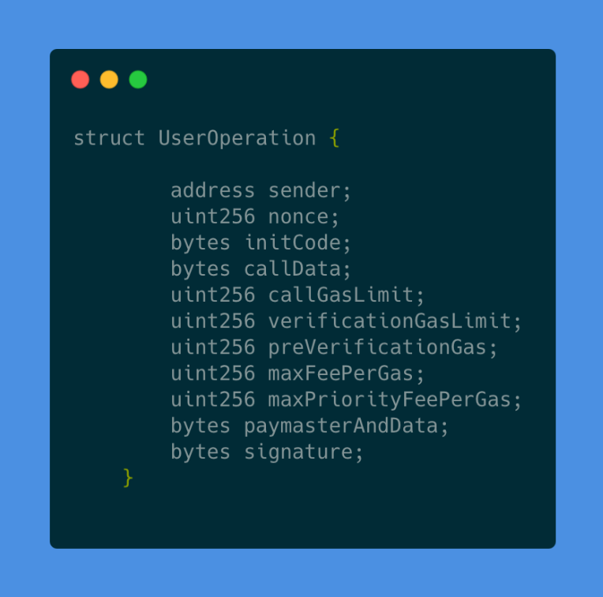

What is Account Abstraction?
Account Abstraction is a transformative approach in blockchain technology that enhances security, user experience, flexibility, scalability and interoperability. By enabling custom logic for account management and transaction handling, it opens up new possibilities for innovation in the decentralized ecosystem — making blockchain more accessible, secure and versatile for both developers and users.
In this post we compare account abstraction to traditional account setups, introduce some of the exciting new use cases this technology enables, and explain how you, as a web3 developer, can take advantage of this new paradigm.

Clone the repo
$ cd account-abstraction
$ npm install
EOA vs Smart Contract Account
An Externally Owned Account (EOA) is controlled by a single private key — whoever holds the key controls every asset, and the authentication scheme (ECDSA) can never change. A Smart Contract Account (SCA) moves that logic into code: validation, authentication and execution become programmable. ERC-4337 standardises this without any consensus-layer change to Ethereum.
01 Key concepts of ERC-4337
The building blocks of Account Abstraction are the UserOperation, Bundler, Sender (SCA), EntryPoint, Paymaster and Aggregator. Together they let developers build smart-contract wallets and make dApps compatible with them.
1 · UserOperation
A UserOperation is a "pseudo-transaction object" representing a user's transaction intent. It can contain multiple instructions and additional data to execute smart-contract calls initiated by the SCA. UserOperations begin the 4337 transaction flow.
UserOperation vs traditional transaction
- Additional fields — new fields in the structure (EntryPoint, Bundler, Aggregator references).
- Alternate mempool — UserOps are sent to a separate mempool where bundlers package them into transactions.
- Authentication — for a regular transaction, auth is always a signature from a single fixed private key. In a UserOp, authentication is programmable.
// SPDX-License-Identifier: MIT
pragma solidity ^0.8.23;
struct UserOperation {
address sender; // the Smart Contract Account
uint256 nonce; // anti-replay value, managed by EntryPoint
bytes initCode; // factory + calldata to deploy the SCA (first tx only)
bytes callData; // the call the SCA will execute
uint256 callGasLimit; // gas for the execution phase
uint256 verificationGasLimit; // gas for the validation phase
uint256 preVerificationGas; // gas to compensate the bundler for calldata/overhead
uint256 maxFeePerGas; // EIP-1559 style fee cap
uint256 maxPriorityFeePerGas; // EIP-1559 style priority fee
bytes paymasterAndData; // paymaster address + data (empty = self-pay)
bytes signature; // SCA-verified signature over the whole UserOp
}2 · Bundler
A bundler watches the alternative UserOp mempool, bundles many UserOperations into a single transaction and submits it to the EntryPoint. Bundlers are compensated with a portion of the gas fees. Because every Ethereum transaction must still be initiated by an EOA, bundlers have EOAs — and in an account-abstracted world they are the only participants that need one.
3 · EntryPoint
The EntryPoint is a singleton contract that receives bundled transactions, then verifies and executes each UserOperation. During verification it checks the SCA can pay the maximum gas it might use; if not, it rejects the op. During execution it calls the account with the supplied calldata and reimburses the bundler.
EntryPoint.handleOps — simplified flow// SPDX-License-Identifier: MIT
pragma solidity ^0.8.23;
interface IAccount {
function validateUserOp(
UserOperation calldata userOp,
bytes32 userOpHash,
uint256 missingAccountFunds
) external returns (uint256 validationData);
}
contract EntryPointLike {
// Bundler calls this with a batch of UserOperations
function handleOps(UserOperation[] calldata ops, address payable beneficiary) external {
uint256 opsLen = ops.length;
// ---- Phase 1: validation loop ----
for (uint256 i = 0; i < opsLen; i++) {
UserOperation calldata op = ops[i];
bytes32 opHash = getUserOpHash(op);
uint256 missingFunds = _requiredPrefund(op); // top-up the SCA must cover
// The SCA decides if the signature/nonce/limits are valid
uint256 validationData = IAccount(op.sender).validateUserOp(op, opHash, missingFunds);
require(validationData == 0, "AA: signature/validation error");
}
// ---- Phase 2: execution loop ----
for (uint256 i = 0; i < opsLen; i++) {
UserOperation calldata op = ops[i];
(bool ok, ) = op.sender.call{gas: op.callGasLimit}(op.callData);
// failures are recorded but do not revert the whole bundle
emit UserOperationEvent(getUserOpHash(op), op.sender, ok);
_compensateBundler(op, beneficiary);
}
}
function getUserOpHash(UserOperation calldata) public view returns (bytes32) { /* ... */ }
function _requiredPrefund(UserOperation calldata) internal pure returns (uint256) { /* ... */ }
function _compensateBundler(UserOperation calldata, address payable) internal { /* ... */ }
event UserOperationEvent(bytes32 indexed userOpHash, address indexed sender, bool success);
}Splitting validation and execution into two separate loops is deliberate: the EntryPoint validates the entire batch before executing any op, so a single invalid UserOp can be dropped without wasting the gas of the others.
4 · Paymaster
The Paymaster is an ERC-4337 contract that implements gas-payment policies. It creates flexibility in how gas is paid and by whom, removing the requirement to hold the chain's native token. Users can pay gas in any ERC-20 (USDC, USDT) or have a dApp sponsor the fees entirely.
Paymasters let application developers sponsor gas fees for users, accept stablecoins for gas, and accept other ERC-20 tokens for gas.
A minimal verifying Paymaster// SPDX-License-Identifier: MIT
pragma solidity ^0.8.23;
interface IPaymaster {
function validatePaymasterUserOp(
UserOperation calldata userOp,
bytes32 userOpHash,
uint256 maxCost
) external returns (bytes memory context, uint256 validationData);
function postOp(uint8 mode, bytes calldata context, uint256 actualGasCost) external;
}
contract SponsorPaymaster is IPaymaster {
address public immutable entryPoint;
address public owner;
mapping(address => bool) public sponsored; // dApp whitelists SCAs
constructor(address _entryPoint) {
entryPoint = _entryPoint;
owner = msg.sender;
}
// Called by the EntryPoint during validation
function validatePaymasterUserOp(
UserOperation calldata userOp,
bytes32,
uint256
) external view returns (bytes memory context, uint256 validationData) {
require(msg.sender == entryPoint, "only EntryPoint");
require(sponsored[userOp.sender], "sender not sponsored");
// returning 0 means "valid, no time bounds"
return (abi.encode(userOp.sender), 0);
}
// Called after execution so the paymaster can do accounting / charge in ERC-20
function postOp(uint8, bytes calldata context, uint256 actualGasCost) external {
require(msg.sender == entryPoint, "only EntryPoint");
address account = abi.decode(context, (address));
emit GasSponsored(account, actualGasCost);
}
function setSponsored(address account, bool ok) external {
require(msg.sender == owner, "not owner");
sponsored[account] = ok;
}
event GasSponsored(address indexed account, uint256 cost);
}5 · Aggregator
An Aggregator is a contract implementing a signature scheme that supports aggregation — it can verify a single combined signature standing in for many individual signatures. If multiple messages are signed with different keys, a single combined signature proves all constituent signatures are valid. By combining signatures (e.g. BLS), aggregators save on calldata costs, validating many bundled UserOperations in one step.
02 New use cases enabled
1 · Authorization over assets inside a wallet
With a conventional EOA, anyone who knows the private key controls every asset. Because an SCA is programmable, you can enforce rules about what a given key may do — multi-signature requirements, time-locks, transfer-amount and frequency limits, even restricting which contracts the account may interact with.
Spending-limit guard inside an SCA// SPDX-License-Identifier: MIT
pragma solidity ^0.8.23;
contract LimitedAccount {
address public owner;
uint256 public dailyLimit; // max wei spendable per day
uint256 public spentToday;
uint256 public windowStart;
constructor(address _owner, uint256 _dailyLimit) {
owner = _owner;
dailyLimit = _dailyLimit;
windowStart = block.timestamp;
}
modifier withinLimit(uint256 amount) {
// reset the rolling 24h window
if (block.timestamp >= windowStart + 1 days) {
windowStart = block.timestamp;
spentToday = 0;
}
require(spentToday + amount <= dailyLimit, "daily limit exceeded");
spentToday += amount;
_;
}
// The SCA exposes execute(); EntryPoint reaches it via callData
function execute(address to, uint256 value, bytes calldata data)
external
withinLimit(value)
returns (bytes memory)
{
require(msg.sender == owner || msg.sender == address(this), "not authorized");
(bool ok, bytes memory ret) = to.call{value: value}(data);
require(ok, "call failed");
return ret;
}
}2 · Fee sponsorship
Normally a user needs the chain's native token in their EOA before they can transact — a real friction point that may involve a CEX, KYC and AML. ERC-4337's paymaster can cover transaction fees on behalf of the user, so SCA creation and future transactions cost the user nothing.
3 · Enhanced fee payments
Although protocol-level fees are still paid in ETH, the programmability of SCAs plus paymasters lets the user pay in any ERC-20 they like — a stablecoin or a dApp's native token (AAVE, UNI, COMP, …).
4 · Account automation and pull transactions
In web2, many payments are "pull" based — a subscription pulls funds automatically. EVM chains today only have "push" transactions, where the owner must actively send funds. Account abstraction lets you grant a third party permission to pull funds from your SCA for a specified amount and periodicity, enabling web2-like automatic payments.
A session-key / pull-payment module// SPDX-License-Identifier: MIT
pragma solidity ^0.8.23;
contract PullPaymentModule {
struct Subscription {
address payee; // who may pull
uint256 amount; // max per period
uint256 period; // seconds between pulls
uint256 lastPull; // timestamp of last successful pull
bool active;
}
// account => payee => subscription
mapping(address => mapping(address => Subscription)) public subs;
function approveSubscription(address payee, uint256 amount, uint256 period) external {
subs[msg.sender][payee] =
Subscription(payee, amount, period, 0, true);
emit Approved(msg.sender, payee, amount, period);
}
// Called by the payee to pull the recurring amount
function pull(address account) external {
Subscription storage s = subs[account][msg.sender];
require(s.active, "no subscription");
require(block.timestamp >= s.lastPull + s.period, "too early");
s.lastPull = block.timestamp;
// the account contract must implement payOut()
ILimited(account).payOut(s.payee, s.amount);
emit Pulled(account, s.payee, s.amount);
}
function cancel(address payee) external {
subs[msg.sender][payee].active = false;
}
event Approved(address indexed account, address indexed payee, uint256 amount, uint256 period);
event Pulled(address indexed account, address indexed payee, uint256 amount);
}
interface ILimited { function payOut(address to, uint256 amount) external; }5 · Batch transactions
Current dApps often require several independent approvals for a single task — e.g. on Uniswap you
sign an
approve then sign the swap. An SCA can batch both into one approval flow, greatly
improving UX.
// SPDX-License-Identifier: MIT
pragma solidity ^0.8.23;
contract BatchAccount {
address public owner;
constructor(address _owner) { owner = _owner; }
struct Call { address to; uint256 value; bytes data; }
// One UserOp, many calls — approve + swap in a single atomic execution
function executeBatch(Call[] calldata calls) external {
require(msg.sender == owner || msg.sender == address(this), "not authorized");
for (uint256 i = 0; i < calls.length; i++) {
(bool ok, ) = calls[i].to.call{value: calls[i].value}(calls[i].data);
require(ok, "batch call failed");
}
}
}6 · Improved recovery
Wallet security is one of web3's biggest problems — self-custody is too complex for the average user, and pure centralized custody has its own risks. Account abstraction enables flexible recovery, such as social recovery (introduced by Vitalik Buterin), where a user's social network helps recover the wallet.
Social-recovery guardians// SPDX-License-Identifier: MIT
pragma solidity ^0.8.23;
contract SocialRecovery {
address public owner;
address[] public guardians;
uint256 public threshold; // how many guardians must approve
address public proposedOwner;
uint256 public approvals;
mapping(address => bool) public hasApproved;
constructor(address[] memory _guardians, uint256 _threshold) {
guardians = _guardians;
threshold = _threshold;
owner = msg.sender;
}
modifier onlyGuardian() {
bool ok;
for (uint256 i; i < guardians.length; i++) if (guardians[i] == msg.sender) ok = true;
require(ok, "not a guardian");
_;
}
function proposeRecovery(address newOwner) external onlyGuardian {
proposedOwner = newOwner;
approvals = 0;
// reset prior approvals
for (uint256 i; i < guardians.length; i++) hasApproved[guardians[i]] = false;
emit RecoveryProposed(newOwner);
}
function approveRecovery() external onlyGuardian {
require(!hasApproved[msg.sender], "already approved");
hasApproved[msg.sender] = true;
approvals++;
if (approvals >= threshold) {
owner = proposedOwner; // rotate the key
emit RecoveryExecuted(owner);
}
}
event RecoveryProposed(address indexed newOwner);
event RecoveryExecuted(address indexed newOwner);
}03 Traditional wallets vs AA wallets
In a traditional wallet, a user owns a private key that controls an EOA, and every dApp interaction needs the user's approval — a signed transaction sent to a node and into the mempool. Under ERC-4337, transactions are initiated by an SCA acting on behalf of the user. The user first signals intent with a UserOperation, signs it (ECDSA, BLS, or any scheme the SCA supports), and sends it off-chain to a Bundler. The bundler — an EOA — aggregates UserOps and forwards them to the SCA through the EntryPoint.
Side-by-sideTraditional EOA │ Account Abstraction (ERC-4337)
────────────────────────────────────────┼──────────────────────────────────────────────
basic unit = transaction │ basic unit = user operation (userOp)
signed with the end user's private key │ signed by the user with any SCA-supported method
sent to an Ethereum node via RPC │ sent to a bundler via RPC
packaged into a block, added to chain │ enters userOp mempool, picked up by a bundler,
│ sent to the EntryPoint for processing
calldata processed by target contract │ calldata processed by the SCA, which usually
│ then calls a function on a target contractNote that under AA, "account creation" doesn't refer to deploying the SCA — it refers to
calculating the
SCA's address counterfactually. The actual deployment happens when the user sends their first
UserOp (carrying the
initCode). And rather than sending a transaction from an EOA, the wallet constructs
a UserOp and sends it
to a bundler — done manually with low-level code, or via tooling like Alchemy's AA SDK.
04 Anatomy of a UserOp
To understand what a UserOp does, look at its core components. The first three fields mirror a normal transaction; the rest make abstraction possible.

- sender — the SCA's address.
- nonce — a unique value preventing replay attacks.
- initCode — if supplied, the code responsible for creating the SCA (first UserOp only).
- callData — the method call to execute on the SCA.
- signature — a sender-verified signature over the entire UserOp.
The sender, nonce and signature fields align closely with
their counterparts
in a traditional transaction.
initCode & the account factory
A cornerstone of AA is retaining the EOA-like ability to derive a wallet locally and immediately
accept funds before
it's even deployed. The standard proposes a factory contract with a method to create an
account, triggered the
first time a user sends a UserOp. The initCode field contains the factory address,
the function that
creates the SCA (usually createAccount), and its parameters — the owner address and
a salt — encoded as
calldata.
// SPDX-License-Identifier: MIT
pragma solidity ^0.8.23;
import {SimpleAccount} from "./SimpleAccount.sol";
contract AccountFactory {
address public immutable entryPoint;
constructor(address _entryPoint) { entryPoint = _entryPoint; }
// EntryPoint calls this through initCode on the very first UserOp
function createAccount(address owner, uint256 salt) external returns (address) {
address predicted = getAddress(owner, salt);
// if already deployed, just return it (idempotent)
if (predicted.code.length > 0) {
return predicted;
}
// deterministic deploy: same owner+salt => same address on any chain
SimpleAccount account =
new SimpleAccount{salt: bytes32(salt)}(entryPoint, owner);
return address(account);
}
// Counterfactual address — known before deployment, so funds can be sent first
function getAddress(address owner, uint256 salt) public view returns (address) {
bytes32 hash = keccak256(
abi.encodePacked(
bytes1(0xff),
address(this),
bytes32(salt),
keccak256(abi.encodePacked(
type(SimpleAccount).creationCode,
abi.encode(entryPoint, owner)
))
)
);
return address(uint160(uint256(hash)));
}
}callData
While callData also exists in traditional transactions, here it refers to the code
the SCA will execute.
The specific function it calls inside the SCA depends on the wallet's intended use, and can
vary.
// SPDX-License-Identifier: MIT
pragma solidity ^0.8.23;
import {ECDSA} from "@openzeppelin/contracts/utils/cryptography/ECDSA.sol";
contract SimpleAccount {
using ECDSA for bytes32;
address public immutable entryPoint;
address public owner;
uint256 internal constant SIG_VALIDATION_FAILED = 1;
constructor(address _entryPoint, address _owner) {
entryPoint = _entryPoint;
owner = _owner;
}
modifier onlyEntryPoint() {
require(msg.sender == entryPoint, "account: not from EntryPoint");
_;
}
// Phase 1: the EntryPoint asks the account to validate the signature
function validateUserOp(
UserOperation calldata userOp,
bytes32 userOpHash,
uint256 missingAccountFunds
) external onlyEntryPoint returns (uint256 validationData) {
// recover the signer from the userOp hash
address recovered = userOpHash.toEthSignedMessageHash().recover(userOp.signature);
if (recovered != owner) {
return SIG_VALIDATION_FAILED; // non-zero => EntryPoint rejects
}
// pre-fund the EntryPoint for the gas it will spend on us
if (missingAccountFunds > 0) {
(bool ok, ) = payable(entryPoint).call{value: missingAccountFunds}("");
(ok); // ignore failure here; EntryPoint re-checks
}
return 0; // 0 => valid, no time bounds
}
// Phase 2: the EntryPoint executes the intended call
function execute(address to, uint256 value, bytes calldata data)
external
onlyEntryPoint
returns (bytes memory)
{
(bool ok, bytes memory ret) = to.call{value: value}(data);
require(ok, "account: call reverted");
return ret;
}
receive() external payable {}
}05 Lifecycle of a UserOperation
Walking through a transfer end-to-end:
- User initiates the operation through a dApp or wallet interface — e.g. transferring tokens.
- Create the UserOperation object with the operation details: sender, recipient, value, callData, gas limit, gas price, nonce, and any custom conditions.
- Validate the UserOperation — the SCA validates against its custom rules: balance, signatures, nonce correctness and any other logic.
- Meta-transaction (optional) — if the user lacks native token for gas, a paymaster/relayer submits the signed op and is reimbursed by alternative means.
- Submit to the blockchain — the validated op is submitted as a transaction, directly or via a bundler.
- SCA executes the operation — the wallet processes the call based on its details and custom rules, e.g. transferring tokens once all conditions are met.
- Custom logic and hooks — pre/post hooks can run additional checks or supplementary tasks during execution.
- Handle gas fees — fees are paid per the predefined method (relayer pays, or deducted from the user/SCA).
- Confirmation — once executed, the op is confirmed and the interface updates to reflect success.
import { ethers } from "ethers";
// 1) derive the counterfactual SCA address from the factory
const sender = await factory.getAddress(ownerAddress, salt);
// 2) encode the call the SCA should perform (transfer 1 token)
const callData = accountIface.encodeFunctionData("execute", [
tokenAddress,
0,
tokenIface.encodeFunctionData("transfer", [recipient, amount]),
]);
// 3) assemble the UserOperation
const userOp = {
sender,
nonce: await entryPoint.getNonce(sender, 0),
initCode: isDeployed ? "0x" : factoryInitCode, // factory + createAccount(owner, salt)
callData,
callGasLimit: 200_000n,
verificationGasLimit: 150_000n,
preVerificationGas: 50_000n,
maxFeePerGas: ethers.parseUnits("30", "gwei"),
maxPriorityFeePerGas: ethers.parseUnits("2", "gwei"),
paymasterAndData: "0x", // self-pay; or paymaster addr + data
signature: "0x",
};
// 4) hash + sign with the owner key
const userOpHash = await entryPoint.getUserOpHash(userOp);
userOp.signature = await ownerWallet.signMessage(ethers.getBytes(userOpHash));
// 5) ship it to the bundler RPC, not a normal node
await bundlerProvider.send("eth_sendUserOperation", [userOp, entryPointAddress]);06 Potential drawbacks
Account Abstraction offers many benefits, but it also brings challenges worth weighing:
- Learning curve — a steep ramp to understand the new concepts and implement them correctly, which can slow developer adoption in the short term.
- Security risks — new participants (bundlers, paymasters) can be exploited if not properly secured. Replay attacks are a concern since signature/nonce handling is left to the developer.
- Potential for centralization — although anyone can run a bundler or paymaster, a few dominant entities in these roles could lead to centralization.
- Maintenance challenges — new ecosystem elements make the network and applications harder to maintain and monitor.
- More expensive — performing an action via a UserOp is typically costlier than an EOA transaction, due to the overhead that makes AA possible (paying the bundler, EntryPoint validation, etc.).